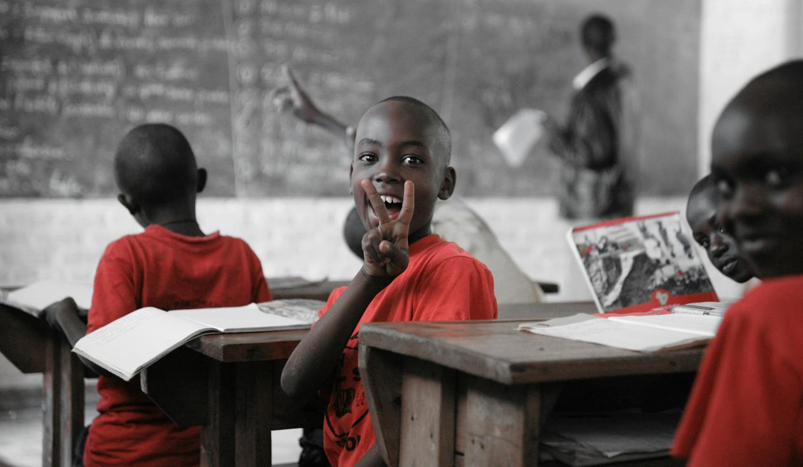

Every child deserves a full plate and a fair chance to learn.
Ubuntu Bridge is a Johannesburg-based non-profit organisation providing daily after-school meals and structured homework and literacy support to children in under-resourced communities. We believe no child's education should be limited by hunger.
Become a Volunteer or SponsorWhat We Do
Every school day, our teams serve nutritious meals and run tutoring sessions for primary school learners at our partner schools across Johannesburg. Read more about our programmes or our story.